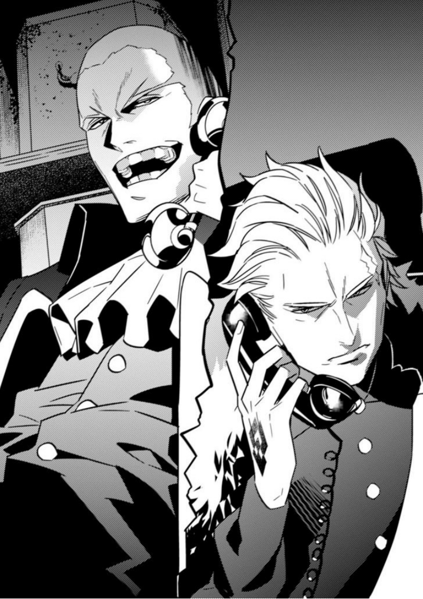
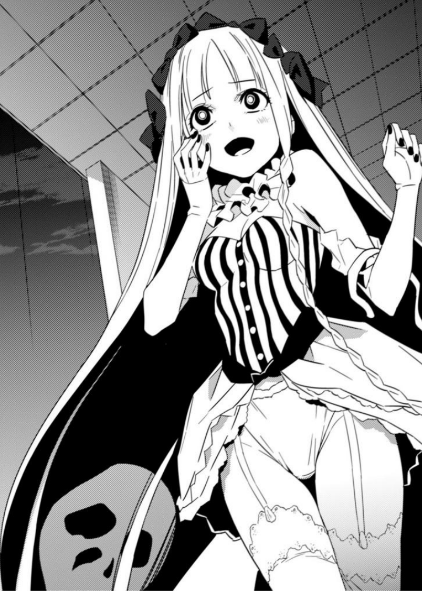

Fate/Strange Fake 1 Prólogo IV
O aposento estava escuro. Por uma pequena fresta nas persianas da janela, era possível ver o teto do prédio alto ao lado. Julgando pelo cenário por trás dele, o quarto parecia estar bem acima do solo, localizado no centro da cidade de Snowfield.
As estrelas brilhavam do lado de fora. O aposento, iluminado pela pálida luz estelar, lembrava algo como um escritório moderno. Das fileiras de mesas com computadores ao ar-condicionado preso ao teto, nada ali parecia fora do comum. Seria fácil esquecer que aquele quarto também fazia parte do palco sobre o qual a Guerra do Santo Graal seria encenada.
No entanto, nenhuma das luzes fluorescentes do teto estava acesa. A voz digna de um homem com postura de líder ressoou na escuridão...
Como se dissesse que a própria cidade era a Guerra do Santo Graal. "Muito bem... parece que os outros cinco Servos já foram invocados", disse o homem. Falava com grande gravidade.
"De fato. No momento, o único Mestre cuja identidade conseguimos confirmar é Tiné Chelc, que colocou o Rei dos Heróis sob seu controle. Não conseguimos estabelecer contato com o Sr. e a Sra. Kuruoka, que planejavam se aliar a nós nesta guerra. Temos conhecimento de vários outros magos na cidade, mas, infelizmente, não conseguimos determinar quais deles, se algum, possuem Selos de Comando", respondeu da escuridão uma voz humilde.
"É mesmo?", replicou o homem, com frustração e decepção mal disfarçadas na voz. "O sistema de vigilância de toda a cidade é surpreendentemente impotente."
A outra pessoa continuou calmamente seu relatório. "Observamos um mago que, em pleno dia, num parque, exibiu seus Selos de Comando e invocou um Servo. Contudo, o Servo executou algum tipo incomum de ilusão sem revelar a própria forma. Assim, conseguiu escapar do nosso agente posicionado ali, disfarçado de banhista. A princípio pensamos que o mago fosse um tolo, mas ao que parece ele é bastante capaz."
"E vocês não identificaram o Espírito Heroico? Nem qualquer característica dele?" "Receio que não. Além disso, com relação ao primeiro Espírito Heroico invocado, embora a invocação tenha acontecido dentro da cidade, não conseguimos compreender os dados de vigilância. Temos certeza de que o Espírito Heroico foi invocado, mas não fomos capazes de constatar mais nada, nem mesmo sua localização."
"Hm... Presumo que isso seja obra daqueles intrusos do governo, a julgar por aquela 'declaração' deles."
Ele devia estar se referindo ao incidente com Rohngall e Faldeus alguns dias antes. No entanto, a outra pessoa, sua subordinada, balançou a cabeça em negativa. "Receio que isso não possa ser. A primeira invocação ocorreu praticamente ao mesmo tempo que a emissão da declaração deles."
"...Nesse caso, é muito provável que a primeira invocação tenha sido realizada pela família Kuruoka." Ele se levantou em silêncio, com expressão amarga, e prosseguiu. "Que assim seja. De todo modo, o maior obstáculo diante de nós é o Rei dos Heróis. Basta eliminá-lo."
"Sim." O silêncio estava prestes a descer sobre o aposento quando, de repente, o telefone começou a tocar. O homem de ar austero pegou o fone com relutância e, de maneira profissional, disse: "...sou eu."
"E aí, mano! Tudo certo?" O homem fez uma careta. "Caster. O que você quer?", respondeu. "Qual é, mano, não fica assim! Escuta só. Eu tava vendo tevê e adivinha?! Disseram que algumas gostosas por aqui custam milhões por noite! Isso é verdade mesmo!?"
"...E se for?" "Arranja uma pra mim hoje à noite, mano. Dá essa força pro teu camarada." O homem do outro lado da linha era direto. Muito direto.
"Eu não sou seu irmão." O tique no rosto do homem austero se acentuou. "Como assim, cara? Não me diz que você esqueceu do nosso pacto de sangue! Somos irmãos de sangue! Sabe, eu curto esse som, irmãos de sangue. Procurei na internet e, ao que parece, o pessoal faz esse tipo de coisa na Escandinávia o tempo todo. Achei maneiro!"
"...Você, um Espírito Heroico, firmou um contrato comigo, seu Mestre. Esse é o limite exato da nossa relação." Suas têmporas latejaram enquanto o aperto em torno do fone aumentava.
Os Selos de Comando estavam nitidamente visíveis no dorso de sua mão, formando um desenho que evocava correntes.
Nesse caso, o homem do outro lado da linha devia ser seu Servo. Era estranho que estivessem tão distantes um do outro, tanto em termos físicos quanto em sua relação. Era incomum um Mestre e um Servo conversarem por telefone.
O Servo resmungou: "Você não me entende mesmo, cara", antes de retomar a conversa numa velocidade metralhadora, pressionando o Mestre.
"Não me entende mal, beleza? Meu trabalho é criar Heróis. Herói mesmo eu não sou nem ferrando. Mas, se você quiser me tratar como herói, tudo bem. Especialmente quando o assunto são as mulheres. Não, pera, pensando bem, claro que eu sou herói! Pô, me diz aí: como um cara come cem..."
"...mulheres e faz mil filhos sem virar herói dos solitários pra sempre, hein!?"
"Chega dessas lorotas implausíveis. Se você tem tempo para contar mentiras, tem tempo para trabalhar. Volte às suas funções."
"Nossa! Eu tenho mesmo que continuar com isso? Se põe no meu lugar um pouco, cara! Escuta. Tudo que eu quero do Santo Graal é comida boa e mulheres gostosas. Mais importante ainda, eu quero ver que tipo de drama essa guerra vai gerar e o que vai acontecer com todos os participantes no final. Só isso! Mas, nesse ritmo, vou ficar maluco de tanto trabalho antes de a guerra terminar!"
O Mestre de Caster suspirou e contemporizou com Caster, reconhecendo suas queixas. "Prepararei mulheres e comida para você. Agora, retorne ao seu trabalho com a máxima rapidez. Produza armas cada vez mais sublimes."
"Cara, você é um chato tremendo. Isso nem é a minha especialidade, tá ligado? Não esquece disso, tá? Além do mais, se você queria um falsificador, existem pessoas melhores por aí! Ontem eu tava na internet lendo sobre um tal de Elmyr de Hory. E ouvi um boato também. Aparentemente existe outro cara que consegue usar algum tipo de magia super-ultra-incrível pra copiar coisas sem parar."
"Uma mera cópia não tem valor algum para nós. Uma falsificação que não supere o objeto original não nos servirá contra o Rei dos Heróis." "Ha! Então você gosta das minhas adaptações, é?! Tô tão feliz que até posso chorar. Só que não! Vai catar coquinho! Ah, droga. Se eu soubesse que isso ia acontecer, não teria brincado dizendo que minhas histórias eram melhores que as de verdade quando fizeram aquele alvoroço todo por causa das falsificações. Pô, aquilo já fazia cem anos, eu tava me esbaldando com Cleópatra e Yang Guifei, aí você aparece e me arranca da cama. E olha pra mim agora! Aqui, me matando no trabalho sujo dos outros! Eu não esperava por isso, cara! Isso é uma droga. Quem ia querer ouvir uma história dessas? Me dá um tempo!"
"Não me entenda mal. Não o escolhi por essas anedotas sobre sua vida. Em termos simples, você é alguém capaz de criar lendas que superam as lendas de outrora. Acredito que você tem o poder de inventar histórias que ultrapassem até as maiores lendas antigas, e o poder de dar forma a essas histórias", respondeu seu Mestre, contendo a frustração. Ele havia reconhecido de imediato que os contos de Caster estavam cheios de mentiras.

"Ha! Olha, mano, tô pouco me lixando pros seus elogios. Ei, tive uma ideia! Que tal pegar esses elogios e escrever um livro com base neles? Aí você lê pra sua mulher. Enquanto ela estiver na cama comigo, claro! ...Aliás, se for fazer isso, me mostra um rascunho primeiro. Eu sou muito melhor em consertar roteiro ruim do que em escrever lendas, então..."
O homem nem ouviu Caster até o fim, desligando no meio da frase. A enxurrada de palavras se recolheu, e o quarto voltou a ficar mergulhado em silêncio total. O homem então passou a falar para a escuridão, agindo como se sua conversa com Caster jamais tivesse acontecido.
"Gilgamesh, o Rei dos Heróis... Ao que tudo indica, sua espada sem nome e seu tesouro infinito serão nosso maior obstáculo."
O homem se levantou da cadeira mais uma vez e começou a andar lentamente pela sala, com as mãos para trás.
"Sendo assim, não terei escolha a não ser esmagá-lo com números antes que ele saque sua espada. Devemos usar todos os meios possíveis para atraí-lo a um estado de fraqueza e então assassiná-lo, com honra."
A cada passo que dava, deixava no ar uma aura poderosa, até intimidadora. Era como se a própria escuridão brilhasse com a cor da urgência.
"No entanto, números por si só não bastarão para derrotá-lo. Afinal, além de não serem afetados por ataques físicos, os Espíritos Heroicos são imensamente mais fortes que até os melhores atletas. Claro, o Caster que invoquei é uma exceção. Numa briga corporal, imagino que até eu possa ter vantagem... mas isso não é o que me preocupa agora." Ele lançou um olhar de esguelha, como se tivesse dito algo que não deveria. Então se recompôs e continuou a andar.
"Por outro lado... e se homens pudessem dominar o uso de Fantasmas Nobres?" No contexto da Guerra do Santo Graal, um "Fantasma Nobre" era uma habilidade quase divina possuída por cada Herói. Tome-se, por exemplo, a espada Ama-no-Murakumo, da lenda de Yamato Takeru. Ela, como todos os Fantasmas Nobres, é um símbolo do Herói que a empunha e extrai os maiores poderes de seu portador.
Naturalmente, não são o tipo de coisa que se encontra largada em uma loja de armas ou antiquário qualquer. Na verdade, dificilmente seria exagero dizer que invocar um Servo equivale a invocar um Fantasma Nobre. Tamanha é a força de um Fantasma Nobre, uma carta decisiva capaz de inverter o rumo de uma batalha.
"Suponha, além disso, que cada uma dessas armas fosse mais poderosa do que o item original em que se baseou. E então?"
Depois de caminhar profundamente pela escuridão da sala, o homem parou diante de uma parede e...
Ergueu a mão direita, a mão onde estavam inscritos seus Selos de Comando, e acionou um interruptor. A sala se iluminou.
Na sala, agora inundada de luz, uma fileira de pessoas se estendia de uma extremidade da ampla sala até a outra. Todas estavam vestidas de preto.
Contudo, não eram os mantos negros típicos dos magos. Em sua cintura pendia um equipamento característico, como um emblema de autoridade.
Homens e mulheres estavam ali sem nenhuma ordem específica. Ao todo, devia haver cerca de trinta pessoas naquela fila de policiais.
Cada um deles permanecia em posição de sentido, os uniformes pretos exalando uma aura impressionante. Em suas mãos, cada um segurava uma arma diferente.
Que visão bizarra. Aquelas expressões pétreas de policiais uniformizados empunhavam espadas, arcos, escudos, lanças, correntes, foices e porretes, entre outras coisas. Além disso, todos tinham algemas e uma pistola no coldre. Aquilo já tinha ultrapassado a categoria de "inadequado" e avançado bem para o território do "absurdo". Um deles inclusive trazia um arcabuz dourado sobre o ombro. Pareciam artistas vestidos de polícia, a caminho de uma apresentação para promover o turismo na região de Snowfield.
As chances, no entanto, eram de que qualquer mago minimamente competente que os visse não riria, mas desmaiaria.
Das armas que carregavam vazava um poder temperado com energia mágica e vitalidade, como se estivesse corroendo o próprio ar do recinto.
Aqueles Fantasmas Nobres eram todos falsificações. Ainda assim, eram mais poderosos que as lendas que lhes deram origem. "Clã Calatin: as Vinte e Oito Monstruosidades." "Esses foram os guerreiros da mitologia celta que cruzaram espadas com Cú Chulainn. A partir de agora, esse será o codinome de vocês."
Contemplando com satisfação aquele poder esmagador e ao mesmo tempo deslocado, ele, o chefe de polícia de Snowfield, abriu os braços e fez uma declaração retumbante. "Embora minhas palavras possam valer pouco, como chefe de polícia eu garanto isto. Como mago, eu juro."
"Vocês são a própria justiça encarnada." Ao ouvirem aquilo, toda a fileira de policiais bateu os pés em perfeita sincronia. Como um só, saudaram o chefe de polícia, que era seu Mestre e, ao mesmo tempo, seu chefe.
E, ao testemunhar aquela ação, qualquer pessoa perspicaz entenderia.
Eles não eram meros policiais; tinham passado por algum tipo de treinamento especial que ia além do normal para sua profissão.
Sua organização havia estabelecido uma "rede" que envolvia a cidade inteira. Tudo de que precisavam do Servo era de seu talento para a criação de Fantasmas Nobres, tarefa na qual os magos sob seu comando haviam prestado auxílio.
Em outras palavras, embora fossem meros humanos, derrotariam Espíritos Heroicos e, ao fazê-lo, abalariam os próprios alicerces da Guerra do Santo Graal.
No fim, que destino os aguardava? Essa ainda era uma história que o homem invocado como Caster não havia terminado de escrever.
Mesmo uma história ainda não escrita, contudo, tem plateia. Depois que os policiais saíram, a sala foi preenchida pelo som de aplausos delicados. "...O que está fazendo aqui?", resmungou o chefe, aborrecido, sem se virar. Um desgosto evidente transparecia em sua voz, carregada de pressão suficiente para esmagar a alma de um pequeno animal.
Então, a dona dos aplausos mostrou o rosto a partir das sombras. "O que foi? Parece até que você tá me tratando com frieza. Eu não posso aparecer só porque sim, mesmo sem ter assunto?"
Era uma garota que aparentava estar na metade da adolescência. Vestia um traje no estilo gothic lolita em preto e branco e segurava um guarda-chuva exageradamente adornado, apesar de estar em um ambiente fechado.
"No mínimo, este não é lugar para gente de fora." "Ah, então eu sou gente de fora agora? Você ficou bem metido, novato." A garota riu e girou o guarda-chuva. Apesar de suas provocações, passava a impressão de estar de excelente humor.
"Ainda assim, aquilo foi uma obra-prima. Como foi mesmo? 'Vocês são a justiça'? Que atuação. Se eu estivesse julgando o Framboesa de Ouro, não hesitaria em indicar você a pior ator!"
"Eu não estava encenando. Apenas disse a verdade." "Ah, é? O que temos aqui? Será que você realmente acredita ser a justiça? Você é um dos autores dessa grande fraude, lembra?"
"Sou." A garota caiu numa gargalhada ao ouvir a resposta inabalável do chefe. "Uau! Queria ter essa sua cara de pau! Isso não é nada patriótico, né? Quero dizer, se você realmente amasse este..."
"...país, jamais chamaria tudo isso de 'justo'!"
"Pode ser verdade que eu não seja um patriota, nem um homem devoto de Deus, mas me orgulho do fato de que minhas ações são fruto de convicções justas." Soando mais como se tentasse convencer a si mesmo do que à garota, o chefe continuou: "Claro, não vou afirmar que nossa justiça se equipara à do Graal. Se as circunstâncias exigirem, talvez acabemos fazendo inimigos não só da Associação e da Igreja, mas do próprio sistema da Guerra do Graal."
"Não se preocupe tanto. Ruler não vai aparecer nesta guerra." A garota acenou com a mão enquanto falava, como se zombasse das palavras que o chefe acabara de pronunciar com tanta determinação.
"O quê?" No instante seguinte, o tom do sorriso da garota mudou de repente. "E mesmo que Ruler apareça depois que isso passar para uma Guerra do Santo Graal de verdade, já será tarde demais." O sorriso ainda parecia inocente, mas agora tinha o aspecto cruel de uma criança pisoteando ritmicamente uma fileira de formigas.
"A Guerra do Santo Graal de Snowfield vai ser elevada de falsificação ao negócio de verdade e sair dos trilhos. Quando isso acontecer, Ruler não vai conseguir pará-la nem interferir. Vamos poder violentar a Guerra do Graal à vontade!" Seu hálito embranqueceu enquanto ela falava em triunfo, mergulhada em êxtase. "Você não vê como isso é maravilhoso? Nunca imaginei que teria outra chance de brincar com aquela santa donzela e depois transformá-la numa pilha de cinzas que nem servem pra lavagem de porco! Ah, isso é incrível! É o melhor! Espero que Ruler venha mesmo! Da outra vez eu não consegui quebrar o espírito dela, mas desta vez ela não vai ser uma heroína que já cumpriu seu papel! Vai morrer como uma Ruler que não conseguiu cumprir seu dever! Tenho certeza de que isso vai destruir ela por dentro!"

Naquele ponto, o sorriso voltou repentinamente ao normal e sua excitação se acalmou. "Não acha tudo isso maravilhoso?", perguntou ao chefe. A resposta dele, porém, foi seca. "...Eu farei isso se se tornar necessário, mas não considero isso uma ação louvável." "Você é certinho demais. Um verdadeiro careta", provocou a garota, girando o guarda-chuva. "Você nunca se cansa de bancar o herói? É tão mais fácil quando você sabe que é o vilão, sabe? Seja o que for que você faça, é só dizer: 'Porque eu sou o vilão.' Agir como louca também é fácil. Você pode justificar qualquer coisa com um 'Porque eu sou maluca.'"
Então, estreitando os olhos de forma maliciosa, acrescentou um último comentário sarcástico. "Ah, mas com a justiça funciona do mesmo jeito! Perdão por isso!" Com isso, a garota se virou para sair, mas parou abruptamente, olhou de volta e perguntou ao chefe: "Ah, é verdade, o Sr. Fake Caster não queria uma mulher? Se quiser, por que eu não vou lá fazer companhia pra ele?"
"Volte logo para a base. Sem desvios desnecessários." Recebendo uma resposta carregada de uma fúria tão intensa que beirava o homicídio, a garota deu de ombros e tornou a virar as costas para o chefe.
"Sim, sim, vou esperar a minha vez como uma boa menina..."
Depois de vê-la abrir a porta normalmente e sair, o chefe cuspiu: "Continue bancando a mente por trás disso tudo enquanto pode, sua velha desgraçada." Mas não havia sorriso em seu rosto, nem qualquer ar de compostura... Qualquer um que o visse teria tomado aquelas palavras como desculpas de um mau perdedor.
Mas, mesmo que fossem, sua mente permaneceria clara. Sua convicção já havia alcançado um lugar para além de seu orgulho, ou até mesmo de sua vida.